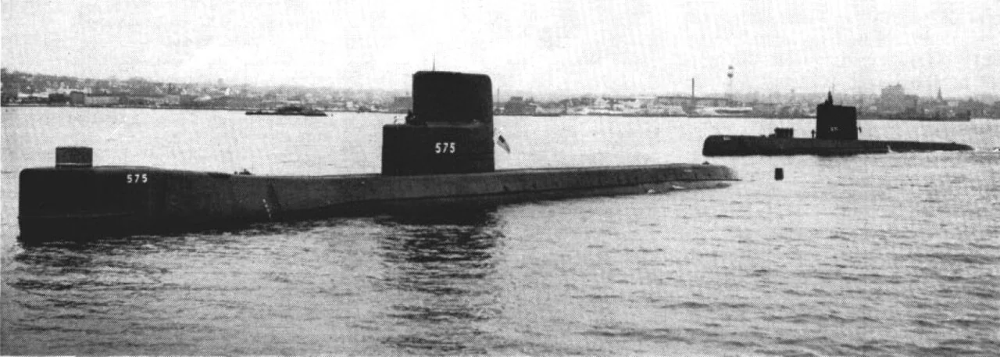
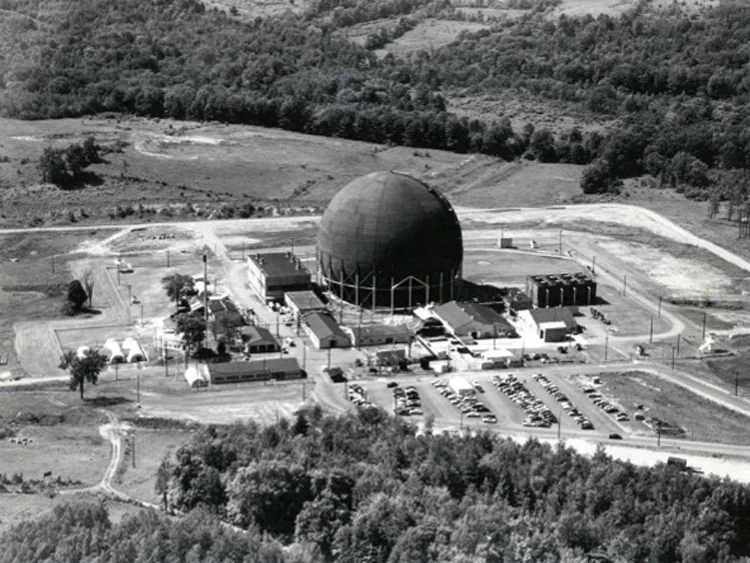
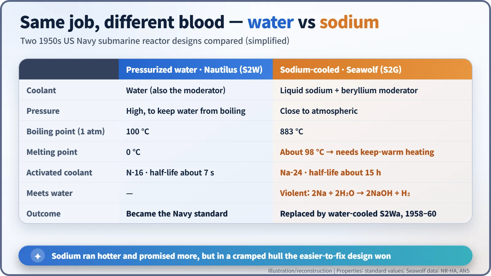
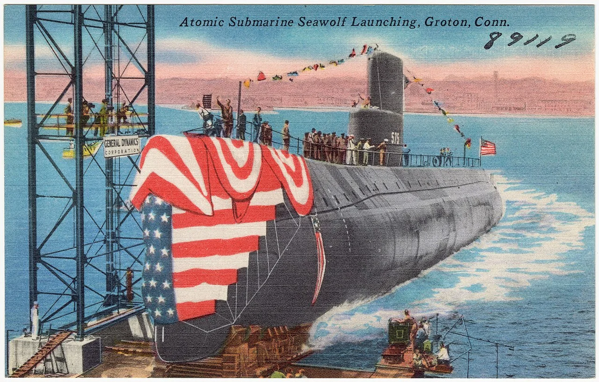
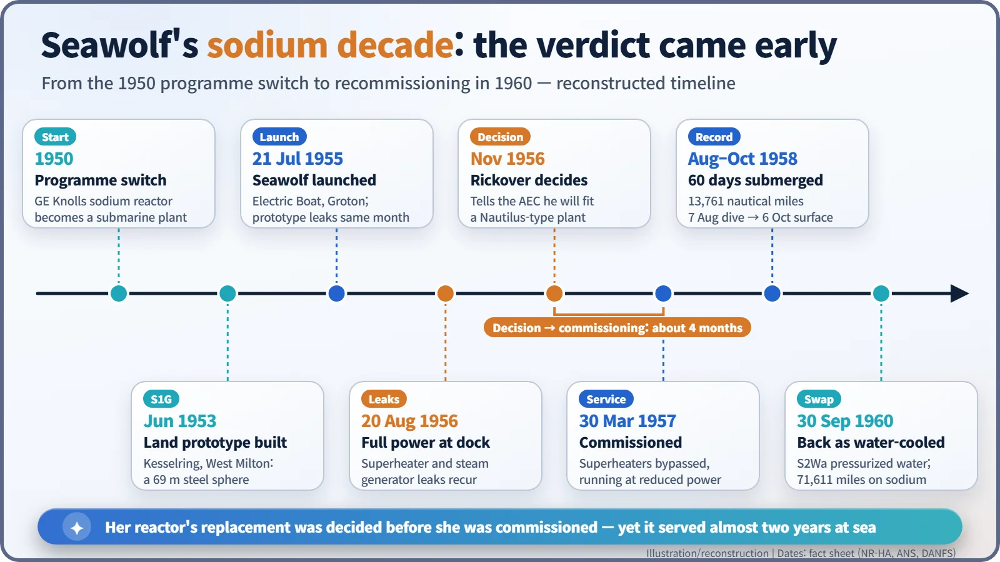

Nuclear History · 157
Too Hot to Handle at Sea — USS Seawolf and the Sodium-Cooled Reactor
Sodium promised hotter steam at low pressure, but leaking steam generators and a hard-to-handle metal decided the contest for water before Seawolf was even commissioned.
In the 1950s the US Navy built two kinds of submarine reactor side by side: a pressurized water reactor for USS Nautilus and a liquid-sodium-cooled reactor for USS Seawolf. Sodium promised hotter steam at low pressure, but leaking steam generators and the metal's awkward chemistry led Hyman Rickover to decide on a replacement even before Seawolf was commissioned in 1957. She still spent 60 days submerged in 1958 before getting a water-cooled heart in 1960.
"I cannot see it for a ship"
"There may be advantages for sodium for shore-based atomic power plants but I cannot see it for a ship." Hyman G. Rickover (1900–1986), head of the US Navy's nuclear reactor programme, said this to the Congressional Joint Committee on Atomic Energy in the spring of 1957. The timing was awkward. At almost exactly that moment the Navy was commissioning a submarine whose reactor was cooled by liquid sodium: USS Seawolf (SSN-575), America's second nuclear-powered submarine. The man in charge was telling Congress that the heart of a brand-new boat was the wrong kind of heart for a ship. [1]

Two horses in the race
Around 1950 nobody knew the best way to put a reactor in a submarine, so the Navy backed two designs at once. Westinghouse's Bettis laboratory developed a pressurized water reactor, in which water is kept under high pressure so it cannot boil. General Electric's Knolls Atomic Power Laboratory developed a reactor cooled by liquid sodium. The first became Nautilus; the second became Seawolf. [2]
The sodium design was called the Submarine Intermediate Reactor (SIR). A beryllium moderator slowed the neutrons only partly, so many fissions were caused by "intermediate-energy" neutrons. The land-based prototype was designated S1G and the shipboard plant S2G. The prototype sat at the Kesselring Site in West Milton, New York, inside a giant steel ball 225 feet (about 69 m) across, the "Hortonsphere". [2] [5]

Why sodium looked so good
Water boils at 100 °C at normal atmospheric pressure. To run reactor coolant much hotter than that, you have to squeeze it hard, which means thick, heavy pipes and vessels. Sodium is different: at atmospheric pressure it does not boil until 883 °C. A sodium reactor can carry intense heat at close to atmospheric pressure. Hotter steam means more miles from the same fuel, and a lighter primary circuit. [2]
The catch was in the chemistry and the physics. Sodium freezes at about 98 °C, so the plant needed heating even when the reactor was shut down. It burns in air and reacts violently with water, giving off hydrogen (2Na + 2H2O → 2NaOH + H2). Passing through the core turns some of it into radioactive sodium-24, with a half-life of about 15 hours, so crews could not enter the reactor compartment for a long time after shutdown. The nitrogen-16 produced in a water reactor's coolant has a half-life of just over 7 seconds. [1]

A launch, and leaking tubes
Seawolf was launched on 21 July 1955 at Electric Boat in Groton, Connecticut. That same month, steam-side leaks turned up in the Kesselring prototype. The hardest component was the steam generator: sodium flowed on one side of a thin tube wall and water on the other. If the wall leaked, the two substances that must never meet would meet. [2] [3]

After fuel was loaded in April 1956, Seawolf's own superheaters and steam generators also developed leaks. Even so, on 20 August 1956 she reached full power while tied up at the dock. In the end, plugging leaking tubes cut about 10% of heat-exchanger capacity, and taking the superheaters out of service cut power by roughly another 10%. Rickover testified that the boat still made about 90% of her speed, but also that finding and fixing a single leak had taken three months of round-the-clock work. [1]
A verdict before the commissioning ceremony
In early November 1956, Rickover told the Atomic Energy Commission that he would replace Seawolf's reactor with a water-cooled plant like Nautilus's. Seawolf was commissioned afterwards, on 30 March 1957. She went to sea with a reactor whose replacement had already been decided. [2] [3]
The story is often summed up as "the leaks killed sodium", but the AEC's official historians, Richard Hewlett and Francis Duncan, put it differently: the leaks were an important factor, but even more persuasive were the inherent limitations of sodium-cooled systems. Rickover reportedly described them as "expensive to build, complex to operate, susceptible to prolonged shutdown as a result of even minor malfunctions, and difficult and time-consuming to repair." Far from a shipyard, the machine you can fix quickly matters more than the one with the best numbers on paper. [4] [5]

Still pulling her weight
It would be unfair to call Seawolf a failure. She dived on 7 August 1958 and did not surface until 6 October: 60 days submerged, covering 13,761 nautical miles. In all she steamed 71,611 miles on her sodium plant. On 12 December 1958 she returned to the shipyard, where the spare pressurized water plant from the Nautilus programme, the S2Wa, was installed. She was recommissioned on 30 September 1960. [2] [3]
The removed sodium plant was sealed in a stainless-steel vessel and sunk in the Atlantic on 18 April 1959, at a depth of about 9,100 feet (about 2,800 m). Sources describe the location differently, off the Delaware coast or about 120 miles (about 190 km) east of Maryland, and in 1980 newspapers reported that the Navy had been unable to relocate the container. This happened before the London Convention (adopted in 1972) brought international controls on dumping waste at sea. [2] [4]
From then on every US Navy nuclear ship used pressurized water reactors. Sodium cooling moved ashore into fast breeder reactor research. The Soviet Union, meanwhile, tried a different liquid metal, lead–bismuth, in the experimental submarine K-27 and in the Project 705 (NATO "Alfa") class. Seawolf's lesson is simple: at sea, the reactor to choose is not the hottest one, but the most dependable one.